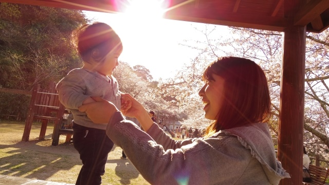

子育てには様々なストレスがつきまとうものです。
子どもが幼いときには四六時中つきっきりで世話をしなければならず、熱を出したりグズったり転んでケガをしたりと目を離せません。
親、特に母親は子どもが学校に上がるまでは自分の時間というものを持てないのではないでしょうか。趣味や習い事はもちろん、たまの映画鑑賞さえままなりません。
さらになかなか言うことを聞かない、モノは散らかしっぱなし、片付けても片付けてもすぐその場で広げ始める。つい声を荒らげてしまったり、時には手が出てしまう。そしてそんな自分に激しく落ち込んでしまう。
こういう経験のあるお母さんは多いのではないでしょうか。
子どもが学校に行き始めると少しは手が空くかも知れません。
しかし、今度は子どもの成績が気になり始め、思春期になると受験や交友関係そして反抗期の問題に悩み始める。
まるでストレスや悩みを抱えるために子どもを生んだのかと思うほど、母親稼業に困難を覚えている人も多いでしょう。
そこで今回はそんな子育てのストレスから解放される法。そして子育てを通じて良い親子関係をいかに築いていくのかについていくつかヒントを示してみたいと思います。
１． 理想の子ども像から脱却し「ありのまま」を認める。
結婚式などで花嫁がよく「二人で暖かな家庭を築いていきたいです！」と参列者にあいさつする光景を見ます。
いつの時代でも女性は『結婚』に夢を描きその最たるものが『暖かな家庭』という言葉に集約されるのでしょう。
優しく理解ある夫と素直で可愛い子ども達に囲まれて生きることの幸せ。そんなイメージがここにはあります。
しかし現実は…
素直で可愛いはずの我が子は、近所でも評判のヤンチャな乱暴息子に育っていたり（笑）、「優しく理解のある夫」」は毎日残業続きで、疲れたと言ってはあなた（妻）の話を聞いてくれない無理解族だった…。
あるいは、男の子が生まれたら健康的なスポーツマンに育って欲しいと思っていたのに現実は、虚弱体質で運動の苦手なインドア派であったり…と。
理想と現実のギャップ
このようなとき私たちは自分が不幸だと思いストレスを感じます。
しかし目の前の現実が思い描いていた理想と違っているからといって、それがただちに「不幸なこと」と考えるのは早計です。理想と違うイコール不幸ではないし、必ずストレスを感じなければいけないわけでもないからです。人間関係がもたらす不調和からくるストレスは必ずそこに「学ばなければならない」ものが存在していることを教えているのです。
確かにいくら言っても部屋を散らかしっぱなしにしている息子はストレスフルな存在かも知れません。
ちょっと注意しただけですぐにふくれっ面をして口答えする娘に、母親であるあなたは手を焼いているかも知れません。
でもよく考えてみると、それはあなたの中に「部屋はきちんと整頓されているべき」「娘は素直で従順であるべき」という自分なりの価値観と子どもに対する理想像があるから、子どもの現実にイラだっているのではないでしょうか。
自分の中にある「こうあるべき」「こうあって欲しい」という理想像を、目の前にいる血の通った我が子に当てはめてそのギャップに苦しんでいるのではないでしょうか。
なのでこういう場合は自分の「こうあるべき」をいったん取り下げて、子どもの言い分や立場に身を置いてみることです。
そうすると「この歳の男の子は部屋を散らかすものだ」という思いが湧いてくるかも知れません。部活や学校行事で忙しいし、部屋をいつもきれいにしておく余裕はないのだろう、という「正しい状況」が見えてくるでしょう。
「娘も年頃を迎え、友人のことや勉強のことでストレスが溜まっているのかも知れない。少しうるさく干渉しすぎかも…」
そう考えることで自分が「部屋をきれいにすべき」「素直であるべき」という理想を子どもに押しつけて、子どもの「あるがまま」を見ていなかったことに気づくことができるのです。
２． 子育ては「学び」のチャンス
上で言ったように自分の「理想の子ども像」を我が子にかぶせることを止めると、子どもの実際の姿がよく見えるようになります。
子どもや自分の人生をもっと広い視野から眺めてみると、現実とうまく折り合い対処しやすくなることに気づきます。
理想というベール越しで物事をみることはある意味で、実像を見逃す現実逃避であり、現実への抵抗であるからです。
実像を見るとはどういうことかというと、もっと子どもの生活や状況に好奇の気持ちをもって子どもの視点に立ってみるということです。
「へえ〜、○○君ってそんなことやる子なんだア」
「ええ〜っ✖✖先生ってそんなオチャメな人なのね」
こんなふうに子どもの視点に立って、子どもの見ている風景を見ることは親にとっても楽しいものです。ポイントは好奇の気持ちです。決して上から目線で子どもを導こうとしないことです。この姿勢を続けると、子どもは自分から必要なことを話すようになります。
そして不思議なことですが、このような接し方をしているとある気づきが起こってきます。それは子どもというものは、親の無意識に秘めている「修正すべき固定観念」を教えてくれる存在だということです、
先のように潔癖症の母親には、「もっと自由であることの大切さ」であったり心配性の母親には「今にくつろぐことの快適さ」であったりという具合に。
親が知らず知らずのうちに偏った価値観や観念を持っていることを子どもが教えてくれているのです。
子どもの一見「問題行動」と思える素行さえ、親の生き方に修正を求めバランスさせようとする意図を感じさせる場合があります。
だから子育てというのは必ずしも、一方的に親が子どもに何かをしてやったり負担をかけさせられる行為なのではなく、子育てを通じて親の成長を促すものだといえるでしょう。
子育てを通じて親も学んでいるのだ。
そう考えれば子育てにまつわるストレスや困難も消え、やりがいのある崇高な行為であることが見えてくるのではないでしょうか。
少なくとも、子育ては苦しむものではなく楽しむものであると気づけるのではないでしょうか。